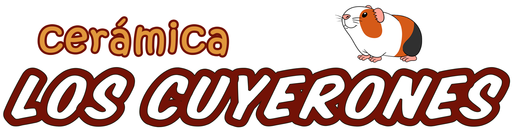
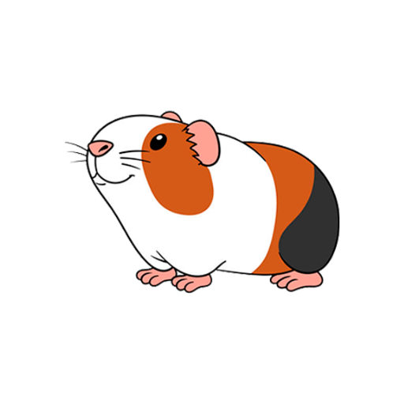

Cargando Los Cuyerones…
Producto artesanal
Desliza hacia arriba, presiona Esc o toca el fondo para cerrar.
Venta de cerámica decorativa, mini macetas para cactus y suculentas, ollitas en miniatura, piezas de arcilla y barro, pintura acrílica y amigurumis tejidos a mano.
Dirección: Av. Canónigo Ramos y Luis Moscoso. Referencia: a una cuadra de la ESPOCH, puerta de Medicina.
Contactos: 096 194 0111 y 099 899 8947.